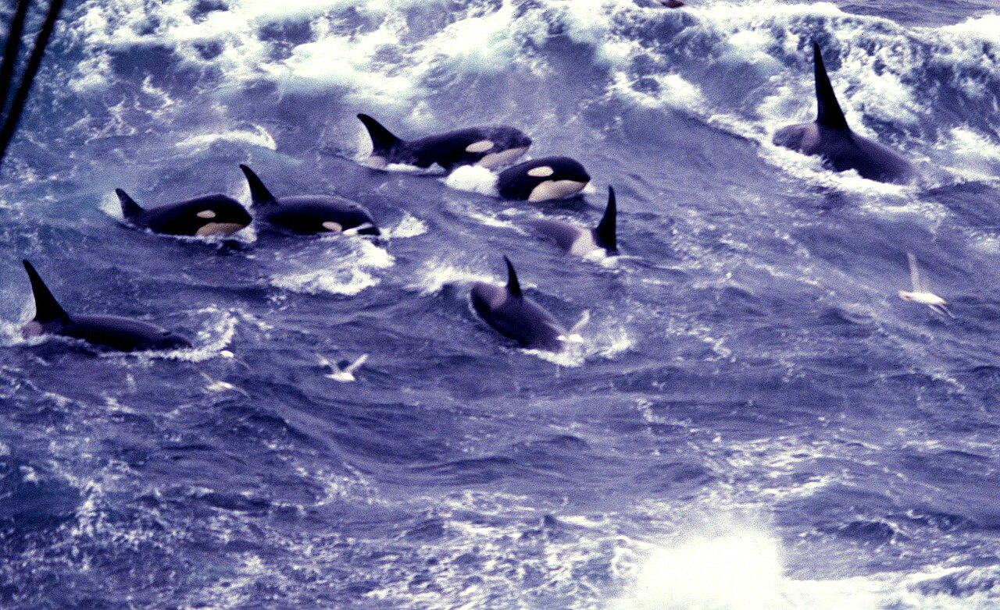

PaperRaven
A machine assistant for generating topic-bounded, verified samples of the scientific literature
University of Colorado Boulder & Santa Fe Institute
- Give PaperRaven a few sentences or more describing your topic, and a half-dozen or so example papers as seeds.
- It returns a corpus of real papers inside the topic boundary you set.
- Every paper is confirmed to exist by the scholarly bibliographic databases; relevance is judged by a model, with its reasons recorded.
An LLM generates; deterministic code verifies. A large language model proposes candidate papers and judges their relevance. PaperRaven's code owns every piece of state, checks every DOI against OpenAlex1 and Crossref2, and refuses anything it cannot confirm. It runs inside Claude Code4 on your subscription: no model API key, no provider account.
Keywords: literature corpora; bibliographic verification; large language models; citation networks
1How a round works
PaperRaven interviews you, drafts criteria from your words, and argues against them before you approve. Your seeds go straight into the corpus. Then it runs rounds, checking in with you after the first and every five after that. You can change the criteria mid-run, and PaperRaven re-judges what the change affects.
Proposes
A batch of papers it knows on your topic, none proposed before.
Verifies
Looks each one up in OpenAlex and Crossref; refuses what it cannot confirm, with the reason.
Judges
Applies your criteria to each verified paper, and writes down why.
Decide
When to stop, when to follow citations, and how to rule on the undecided.
| Proposed by the LLM | Checked | Judged, with the judge's reason |
|---|---|---|
| Migratory insights from singing humpback whales recorded around central New Zealand | verified | in · Inclusion 2… explicitly addresses song transmission between populations as song culture. |
| Sperm whale feeding variation by location, year, social group and clan | verified | in · Inclusion 3Tests diet differences among sperm whale vocal clans and social groups by stable isotopes … |
| Dolphins restructure social system after reduction of commercial fisheries | verified | out · Inclusion 1… it does not examine social learning, cultural transmission or traditions. |
| Can environmental heterogeneity explain individual foraging variation …? | verified | undecidedNo abstract available; … whether it addresses social learning or tradition cannot be determined.The researcher ruled on it. |
| Using culturally transmitted behavior to help delineate conservation units for cetaceans | refused | No registered title is close enough (best similarity 0.92): the real one ends “… for species at risk”. Close is not enough, so nothing is guessed. The paper turned up in round 34, under its real title. |
Over the whole run: 197 proposed, 192 verified, 5 refused. Of the verified, 133 in, 34 out, 25 undecided and ruled on by the researcher.
2Example run: cetacean culture
158 papers in the final corpus, found over 42 rounds.
seeds: 5 PDFs # read from their front matter; kept whatever their year year_min: 2004 # a rule, applied to the databases' dates papers_per_round: 5 target_papers: 150 max_rounds: 55 criteria: 6 inclusions, 5 exclusions, 7 judging notes rulings: 25 named papers # 20 in, 5 out proposer: Opus 5.5 # self-reported judge: Sonnet 5.5 # self-reported
I'm looking for papers about culture, dialects, and social learning in whales and dolphins (cetaceans) that examine how non-human marine mammals acquire and transmit non-genetic behaviors, vocalizations, and foraging strategies across generations. …
The topic, in the researcher's own words (opening sentence)

Where the papers came from
- Early rounds: The LLM's own recall supplies most papers. Web search adds some recent work.
- As recall thins: PaperRaven extracts papers from the corpus's own reference lists, preferring papers with more corpus citations.
- As references thin: PaperRaven queries papers that cite the corpus, preferring papers that cite more of the corpus.
- Rounds 1–94.0 papers a round, all from the LLM's recall.
- Rounds 10–24Recall thins, 4.0 → 2.9; web searches for recent work add 0.5 a round.
- Rounds 25–30The works the corpus cites, ranked: 13 papers, among them Janik 2014, cited by 17.
- Rounds 31–42The works citing the corpus: 53 papers, among them Garland & Rendell 2024, which cites 28.
End of the run. After 42 rounds, PaperRaven crossed its target of 150 papers. More papers could have been supplied: in the final three rounds, the LLM was still offering 5 papers a round, drawn from the works citing the corpus. PaperRaven then generated a citation network from the corpus (Figure 2) and a plot showing the corpus's distribution over time (Figure 3).
3PaperRaven vs. Alternatives
ChatGPT suggests papers. Google Scholar matches keywords. PaperRaven does the rest.
| PaperRaven | Asking ChatGPT | Google Scholar | |
|---|---|---|---|
| Are the papers real? | Every one matched to a database record | Some may not exist, or have the wrong details | Yes |
| What it finds | New papers round after round, including ones that share none of your keywords | Often the same few papers | What matches your keywords, ranked |
| Your criteria | A separate judge applies criteria you approved, and gives its reason | None | None |
| Citations | Ranks the works your whole corpus cites, and the works that cite it, late in a run, with your OK | None | “Cited by”, one paper at a time |
| What you keep | A bibliography, every decision with who made it, a citation network, the PDFs it can get, and an audit trail | A chat | A list of results |
4PaperRaven output
Each run's export is a folder you keep, <run-name>-corpus/:
README.md- What was searched, by what, under which criteria, with what result: a flow table and a methods paragraph to adapt.
papers.bib,papers.csv- The corpus, with the database's bibliographic details and why each paper is in.
excluded.csv- Each excluded paper, who excluded it, under which criterion, and why.
uncertain.csv- The papers the judge could not decide, yours to rule on.
worklist.csv- Every paper with its best acquisition route, open access first.
citation_network.html- The citations among the corpus papers, to explore offline in a browser;
citations.csvholds them as an edge list. audit/- Every record, every configuration, the judge prompts and the rejections, with a checksum of every file.
fetch- Downloads the PDFs it politely can, and lists the rest on a click-list, one link each.
What the code guarantees, and what it cannot promise
- Every paper exists: each was matched to a record in OpenAlex or Crossref, and its details are the database's, not the LLM's memory.
- Every decision is recorded, with who made it, and nothing disappears silently: every proposal is accounted for.
- Not promised: completeness, identical relevance calls on a second judging, or the same corpus from a second run.
5Privacy and security
Safe to run, and polite to the sites it uses.
enforced by PaperRaven's code or by Claude Code · instructed a rule the LLM is told to follow
The LLM is fenced in
- Only the code writes the run's state; the LLM writes answer files. instructed
- The judge can only read, write and search the web; the close-out reviewer can only read. enforced
- Titles and abstracts are data, never instructions. instructed
- No made-up DOIs, no downloads outside
fetch, and never a look at your.env. instructed
Polite to publishers
- At most one request every 10 s to a publisher, and at most 25 per publisher. enforced
- It stops asking a publisher at its first refusal. enforced
- It bypasses no paywall and logs in nowhere. enforced
- It refuses local and private network addresses, so a link cannot send it into your own network. enforced
Your information stays yours
- Your email goes only to OpenAlex and Crossref, and is redacted in the export. enforced
- Your OpenAlex key is never written into a run or its export. enforced
- No telemetry: nothing goes to PaperRaven's author or anyone else. enforced
- PDFs never go where git would track them. enforced
6Install
You need Python 3.11 or later, git, and Claude Code; PaperRaven is tested on macOS. In a new folder for your literature work:
python3.11 -m venv .venv
.venv/bin/pip install git+https://github.com/aaronclauset/paperraven
.venv/bin/paperraven install-skillThen start Claude Code in that folder and type /paperraven. It interviews you for the topic, the seed PDFs, how many papers you want and a contact email, which goes only to OpenAlex and Crossref. Abstracts the databases lack are looked up in Europe PMC3, which is sent no email address. For privacy, politeness to publishers and the full procedure, see the README.
7Citing PaperRaven
A. Clauset, "PaperRaven: a machine assistant for generating topic-bounded, verified samples of the scientific literature", https://github.com/aaronclauset/paperraven (2026)
References
- OpenAlex, an open catalogue of the world's scholarly works. openalex.org
- Crossref, the registry of DOIs for scholarly works. crossref.org
- Europe PMC, for abstracts. europepmc.org
- Claude Code, by Anthropic. claude.com/claude-code
Acknowledgements. Supported in part by the University of Colorado Boulder and by Schmidt Sciences.
PaperRaven is an independent research tool. It is not affiliated with, or endorsed by, Anthropic, OpenAlex, Crossref or Europe PMC, whose services it uses. BSD 3-Clause. © 2026 Aaron Clauset.